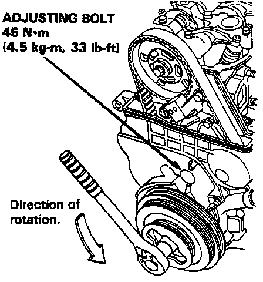

Timing Belt Tensioner: Adjustments
Tension Adjustment
CAUTION: Always adjust the timing belt tension with the engine cold.

NOTE:
- The adjuster is spring-loaded to properly tension to the belt after making the following adjustment.
- Always rotate the crankshaft counterclockwise when viewed from the pulley side. Rotating it clockwise may result in improper adjustment of the belt tension.
1. Disconnect the alternator terminal and the connector, then remove the engine wire harness from the cylinder head cover.
2. Remove the cylinder head cover.
3. Set the No.1 piston at TDC.
4. Loosen the adjusting bolt 180.
5. Rotate the crankshaft counterclockwise 3-teeth on the camshaft pulley to create tension on the timing belt.
6. Make sure the timing belt and the camshaft pulley are engaged securely.
7. Torque the adjusting bolt to 45 N.m (4.5 kg.m, 33 lb.ft).
8. After adjusting, retorque the crankshaft pulley bolt to 250 N.m (25.0 kg.m, 181 lb.ft).